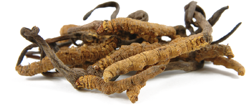
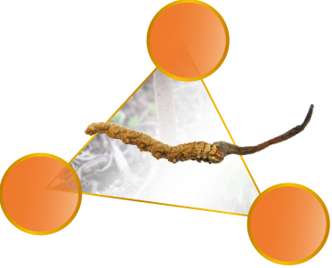

Đông trùng hạ thảo từ xa xưa đã được coi là loại thượng dược giúp tăng cường sức khỏe, kéo dài tuổi thọ, trong sách cổ xưa "Bản thảo trùng tân" và sách hiện đại "Trung Quốc dược điển", đầu giới thiệu Đông Trùng Hạ Thảo là cây thuốc bổ phổi ích thận, tăng cường chức năng thận, bảo vệ cơ quan gan, tỳ và phổi.
Đông Trùng Hạ Thảo là một giống nấm mọc ký sinh trên ấu trùng của một loài sâu thuộc họ cánh bướm, nấm và sâu cộng sinh với nhau. Mùa đông, ấu trùng nằm dưới đất bị bào tử nấm Cordyceps Sinensis nhiễm vào, hút hết chất dinh dưỡng làm con trùng chết khô, đến mùa hè, nấm sinh cơ chất (stroma) mọc chồi khỏi mặt đất nhưng gốc vẫn dính liền vào đầu con sâu. nên được gọi là Đông Trùng Hạ Thảo.

Đông Trùng Hạ Thảo chứa nhiều thành phần có ích cho sức khỏe con người. Như Cordyceps polysaccha-ride, Mannitol, adenosine…

Adenosine
Mannitol
Cordyceps polysac-charide
MannitolThành phần Diosmol trong mannitol, có thể tìm thấy ở nhiều thực vật, song chỉ có Đông Trùng Hạ Thảo với hàm lượng Diosmol cao nhất, ngoài có công dụng làm giảm mỡ máu, đường máu và cholesterol, còn giúp mạch máu giãn nở, chống căn bệnh tim mạch hết sức hữu hiệu.
Cordyceps polysac-charideThành phần này có hàm lượng cao nhất trong Đông Trùng Hạ Thảo, với công dụng nâng cao hệ miễn dịch, giúp phòng chống các bệnh do virus như cảm cúm, viêm gan v.v…
AdenosineGiảm sinh trưởng của tế bào xấu, tăng lượng oxy trong máu
Ưu điểm đặc biệt của Đông trùng hạ thảo Tenken
Mỗi viên 250mg Đông Trùng Hạ Thảo Tenken, ngoài hàm chứa 200mg Đông Trùng Hạ Thảo, còn thêm vào 50mg thành phần tinh chất Linh Chi hảo hạng. Tinh chất của Đông Trùng Hạ Thảo Tenken được áp dụng bằng kỹ thuật chiết xuất nước nóng, qua các khâu xử lý nghiêm ngặt, giúp cơ thể con người dễ dàng hấp thụ.
Đông Trùng Hạ Thảo Tenken 100% sản xuất tại Nhật Bản, mỗi công đoạn bào chế đều được giám sát hết sức nghiêm ngặt, quản lý chất lượng bằng công nghệ kỹ thuật cao, đảm bảo mức độ an toàn và đáng tin cậy.
100% SẢN XUẤT TẠI NHẬT BẢN
Quý khách muốn tư vấn hoặc mua hàng, vui lòng điền đầy đủ thông tin bên dưới, chúng tôi sẽ liên lạc lại trong vòng 24h.